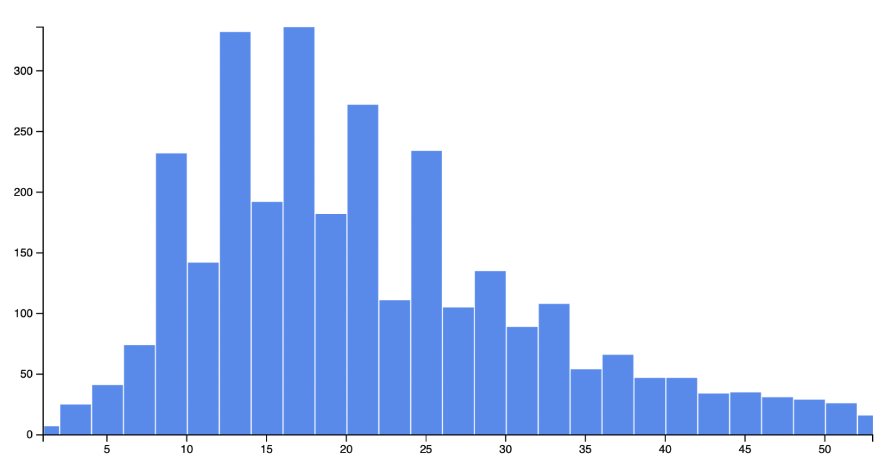
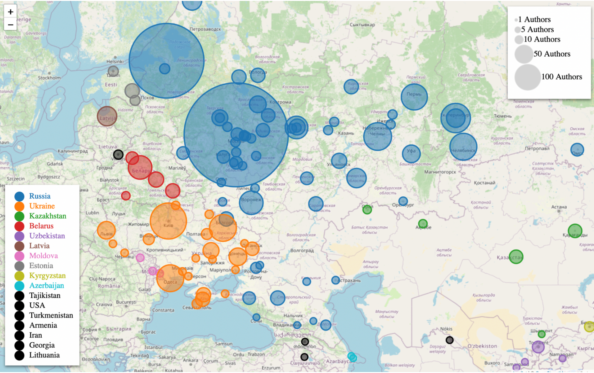
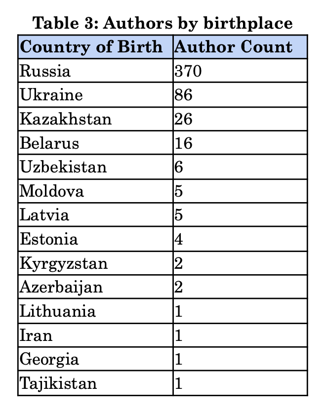
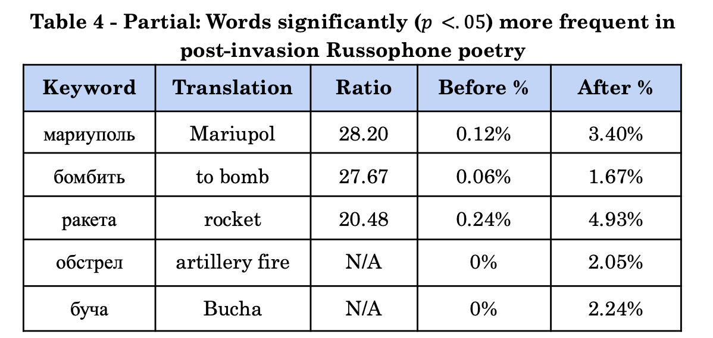
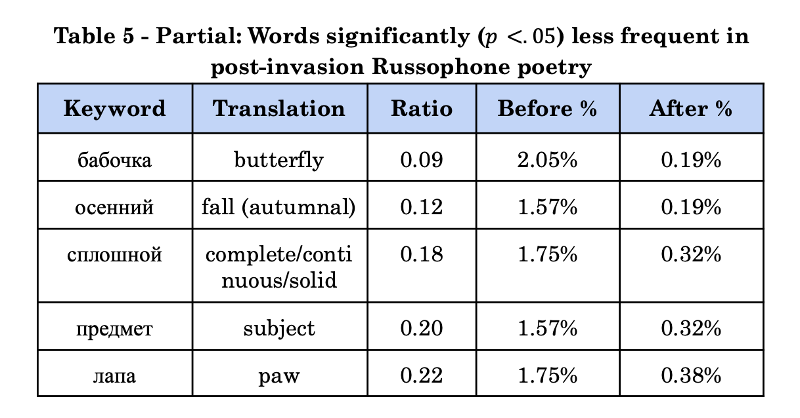

Scorched Wordscapes: A Multidisciplinary Study of Russophone Poetry Before and After the 2022 Invasion of Ukraine
I chose to write my Harvard senior thesis for my joint bachelor's degree in Computer Science and Slavic Languages and Literatures on a digital humanities topic that combined with my interests in social media data, Eastern European politics, Russian linguistics, and poetry.
Read the thesis here: https://dash.harvard.edu/handle/1/37376431

Figure: The above map shows the birthplaces of authors included in the poetry dataset I curated. I studied Russian-language poetry, but as the map shows, authors writing in Russian are not necessarily from the Russian Federation. Russian-language poetry is written by authors encompassing a diversity of cultural, ethnic, and national backgrounds.
Abstract
My thesis explores the changes in Russophone poetry before and after the Russian invasion of Ukraine on February 24th, 2022, by developing and analyzing a novel database of 3,222 Russian-language poems posted to the internet from 2017 to 2022. The interdisciplinary study employs a combination of quantitative and qualitative methods, such as computational semantic analyses and close readings, to uncover the shifting relationships between language and politics in Russophone poetry. The findings reveal authors' deepening estrangement from the Russian language and a changing thematic landscape. Post-invasion poetry exhibited an increased focus on themes of war, morality, and mortality and a diminished focus on nature, memory, and everyday human experiences. The research highlights the potential of natural language processing for detecting larger-scale thematic shifts in text. This study also emphasizes the value of poetry as a subject that can enhance our understanding of the political and historical moment.
Excerpts from the thesis
Please see the original thesis for citations and footnotes.
Research question
This thesis responds to the following broad question: how do political events change language, particularly when the language of literature is the language of the aggressor?
Haleta asserted that in times of political violence, the metamorphosis of the literary language made it "impossible to predict the meanings and associations of words used by writers."10 On the Maidan in 2014, Haleta recognized that the violent struggle between protestors and the state set the stage for Ukrainian poetry to change in stylistic and thematic ways. Violent reality and poetry were tightly linked. In 2022, the geopolitics of Eastern Europe again rendered reality unrecognizable to those living through it, albeit in a different time and under a different scale of violence. In contrast to the 2014 Maidan protests, the Russian language has assumed an important role in the conflict (more in the Historical Background section). One would expect huge changes to the Russian literary language, changes which are "impossible to predict." The main focus of my study is not prediction but rather a characterization of changes which occurred in the linguistic landscape. I use a mixture of quantitative and qualitative methods to better understand how shifts in reality are reflected in semantic and associative shifts in the literary language.
This thesis approaches the task of understanding shifts in poetic language on the level of the word: how do words change in significance, and how do the associations between words change? I divide the dataset into pre-invasion and post-invasion subsets which are the experimental sets for language shift. The quantitative analyses serve as proxies for analyzing different aspects of language shift, generating high-level statistics and results about the textual dataset which I use as jumping-off points for close reading.
Data collection
I scraped the text and metadata of the Telegram channels and No War Poetry with the help of a Python scraper and collected poem data from ROAR and Facebook by hand. Because I was interested in the transformations of literary language over a specific period, I only collected poetry posted to the internet from 2017 to 2022.
...
The freedom and multidimensionality of online poetry make it an excellent source for studying changes in language during times of political turmoil. Based on studies of Russian internet poetry, the researcher Julia Bartosh has written that "network poetry is characterized by the following features: the absence of editors and, as a result, greater freedom in choosing a topic and form, the ability to correct the text after it has been published, hypertextuality, multimedia, polycode82, and the use of special kinds of linguistic devices."83,84 The absence of the editor is useful for a study of language change in a sensitive political environment, since authors may (more) freely express their thoughts and emotions regarding the ongoing political situation without any censorship or restrictions. This freedom in choosing topics and forms results in a more accurate reflection of the evolving language and sentiments during times of turmoil.
Bartosh notes that the most important feature of online poetry is "the exaggerated role of the reader, in fact, a fusion of the poet, the reader with his response-reviews, and the poetic text itself." The internet shortens the distance between writer and reader, ideation and publication. Scholars of the internet such as Whitney Phillips, Ryan M. Miller, and danah boyd have written extensively on the blurred digital boundaries which characterize networked interactions, including the boundaries of then and now, formal and folk, commercial and populist, and public and private.85 This interconnectedness allows for a more comprehensive view of language change as it reflects the complexity of the socio-political environment.
Data overview
Histogram of poems by number of linesThe average number of lines per poem is 24.92 lines, and the median is 20 lines. The length of poems ranges from one line to 262 lines.
Authors by birthplace (excluding the Russian Far East)
The authors in the database span several generations, and their birth dates span from the 1930s to the 2000s (to my knowledge, the youngest poet in the dataset was born in 2003). Based on Wikipedia articles and biographies on poetry blogs, I identified the birthplaces of 677 out of 738 authors.
 Changes in word frequency
Based on the frequency calculations and significance tests, 179 words experienced a significant increase in frequency from pre- to post-invasion, and 242 words experienced a significant decrease in frequency during the same period. The tables below show the top words from the "significant increase" and "significant decrease" categories. All of the words shown had significant (𝑝 <. 05) changes in frequency between the two time periods in question.
Abridged results ordered by ratio:
 